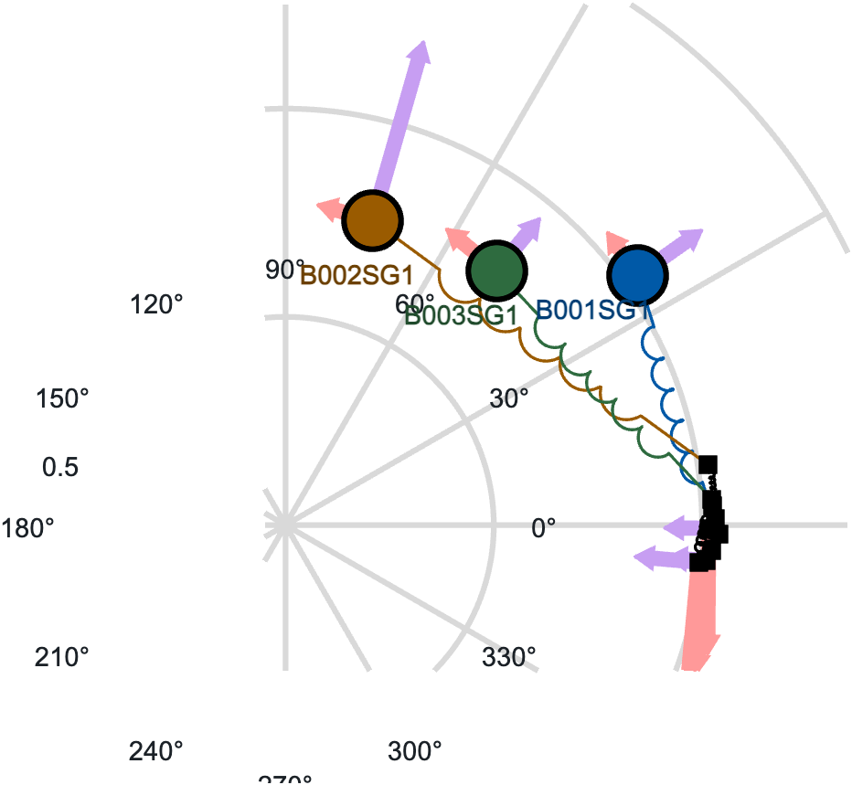

What this Part coversこのPartで分かること
- How a power system can be pictured as masses joined by springs: voltages are points on a plane, and lines are springs between them.電力系統を、ばねでつながった質点として描く考え方。電圧は平面上の点、送電線はその間のばねです。
- Why a power flow solution is the position where all the springs balance.潮流計算の解が、すべてのばねがつり合う位置になる理由。
- Answers in pictures to three questions: why does the frequency fall when the load grows, what is inertia, and what happens when stability is lost?「負荷が増えると周波数はなぜ下がるのか」「慣性とは何か」「安定性が崩れるとき何が起きているのか」という 3 つの問いへの、図による答え。
- How a voltage collapse looks as a mass sliding down a funnel-shaped surface z = log|V|.電圧崩壊が、漏斗の形の曲面 z = log|V| を質点が滑り落ちる様子として見えること。
- Which pictures GUILDA draws for an equilibrium, a power flow result and a simulation result.GUILDA が平衡点・潮流計算の結果・シミュレーションの結果について描ける図。
Why power system phenomena are hard to picture電力系統の現象が見えにくい理由
Many beginners find it hard to form a mental picture of what happens in a power system. There are three main reasons.
電力系統で何が起きているのかを、頭の中で思い描くのは簡単ではありません。主な理由は 3 つあります。
- Nonlinear equations非線形の方程式
- Alternating current makes sines and cosines appear in the power that a line carries. The model is a set of nonlinear differential and algebraic equations, and its solution can rarely be written down by hand.交流で送るため、送電線を流れる電力には三角関数が必ず現れます。モデルは非線形の微分方程式と代数方程式の組になり、解を手で書き下せることはほとんどありません。
- Many nodesノードが多い
- Even a test system has tens of buses and generators, and a real one has thousands. Looking at the time series of each one does not show how they move together.試験用の系統でも母線や発電機は数十あり、実際の系統では数千になります。1 つずつ時間の波形を見ても、全体がどう動いているかは分かりにくいままです。
- Invisible electricity電気は目に見えない
- Voltages and currents cannot be seen. Unlike a swinging pendulum, nothing in front of us shows what is going on.電圧も電流も目には見えません。揺れる振り子と違って、何が起きているかを目の前で見ることができません。
As a result, questions like these are difficult to answer intuitively:
そのため、次のような問いに直感的に答えるのは難しくなります。
(1) Why does the frequency fall when the load grows? (2) What is the "inertia" of a power system? (3) What is happening when transient stability is lost?
(1) 負荷が増えると、周波数はなぜ下がるのか。(2) 電力系統の「慣性」とは何か。(3) 過渡安定性が崩れるとき、何が起きているのか。
This Part translates the electrical system into a mechanical one that we can imagine: points that move on a plane, joined by springs. The idea is old. The Noda model explained a two-node system with a mechanical model, and Gronquist and co-authors showed in 1996 that a multi-machine system can be animated as masses and springs on the phasor plane. This page follows that idea and adds a third dimension that makes voltage collapse visible.
この Part では、電気の系統を、思い描ける機械の系に置き換えます。平面の上を動く点と、それをつなぐばねです。考え方そのものは以前からあり、野田モデルは 2 ノードの系統の電気的な特性を機械のモデルで説明しました。また Gronquist らは 1996 年に、多数の発電機を含む系統を、フェーザの平面上の質点とばねのアニメーションとして見せています。このページはその考え方に沿って説明し、さらに 3 次元目の座標を加えて、電圧崩壊も見えるようにします。
A voltage as a point on a plane電圧を平面上の点として置く
The voltage of each bus is a sine wave at 50 or 60 Hz. In normal operation all buses oscillate at the same frequency; they differ only in their amplitude and in how far their wave is shifted, the phase. If we look at the waves from a frame that itself turns at the rated frequency, the oscillation disappears and each voltage becomes a fixed arrow, the phasor. Its length is the voltage magnitude |V| and its angle is the phase θ:
各母線の電圧は、50 Hz または 60 Hz の正弦波です。平常の運転では、すべての母線が同じ周波数で振動していて、違うのは振幅と、波のずれ（位相）だけです。そこで、定格の周波数で回る座標から波を見ると、振動は消え、各母線の電圧は止まった矢印になります。これがフェーザです。矢印の長さが電圧の大きさ |V|、角度が位相 θ です。
Here is the instantaneous voltage of bus , its RMS value and the rated frequency.
は母線 の電圧の瞬時値、 はその実効値、 は定格の周波数です。
Put one point for every bus on the same plane, and the state of the whole network becomes a picture of points. In steady operation the points stand still. If the frequency of the system becomes lower than the rated value, all the waves fall behind the turning frame, so all the points start to turn clockwise together; if it becomes higher, they turn counterclockwise. A change of frequency is a common rotation of the picture.
すべての母線の点を同じ平面に置くと、系統全体の状態が点の並びとして 1 枚の絵になります。平常の運転では、点は止まっています。系統の周波数が定格より低くなると、どの波も回る座標より遅れていくので、すべての点がそろって時計回りに回り始めます。高くなると反時計回りです。周波数の変化は、絵全体の回転として見えます。
Transmission lines as springs送電線をばねに見立てる
Now connect the points. The current that flows from bus into the line to bus is proportional to the difference of the two voltages. Neglect the resistance and the shunt capacitance of the line, so that it is a pure reactance with the admittance , . Then
次に、点どうしをつなぎます。母線 から母線 への送電線に流れ込む電流は、2 つの電圧の差に比例します。送電線の抵抗と対地静電容量を無視して、リアクタンス だけでできているとすると、アドミタンスは （）で、次の式になります。
The second form is Hooke's law: the force of a spring is the spring constant times the stretch, pointing towards the other end. Here the "stretch" is the difference between the two points, the "spring constant" is the line susceptance , and the "force" is the current turned by −90° (multiplied by ). A line is a spring between two points. A short, strong line (small X) is a stiff spring.
2 つ目の式はフックの法則（ばねの力 ＝ ばね係数 × 伸び、向きは相手の端へ）と同じ形です。「伸び」は 2 つの点の差 、「ばね係数」は送電線のサセプタンス 、「力」 は電流を −90° 回したもの（ を掛けたもの）です。つまり、送電線は 2 つの点をつなぐばねです。短くて太い送電線（X が小さい）ほど、硬いばねになります。
Split the force into the part along the circle through (tangential) and the part along the radius (radial). With the complex power sent from bus into the line, the force seen in the direction of is
この力を、 を通る円に沿う成分（接線方向）と、半径に沿う成分（半径方向）に分けます。母線 から送電線へ送り出す複素電力を とすると、 の向きから見た力は次のようになります。
The real part is the radial component and the imaginary part the tangential one: the spring pulls bus backward along the circle with , a torque of exactly around the centre, and towards the centre with , the reactive current.
実部が半径方向の成分、虚部が接線方向の成分です。ばねは母線 を、円に沿って後ろへ の力（中心のまわりのトルクはちょうど ）で、中心へ向かって （無効電流）の力で引きます。
This gives the whole dictionary between the electrical and the mechanical picture:
これで、電気の世界と機械の世界の対応表ができます。
- Line susceptance B送電線のサセプタンス B
- Spring constantばね係数
- Voltage phasor V電圧フェーザ V
- Position of the point on the plane平面上の点の位置（座標）
- −j × current−j × 電流
- Force of the springsばねの力
- Active power P有効電力 P
- Torque along the circle (around the centre)円に沿う向き（接線方向）のトルク
- Reactive current Q/|V|無効電流 Q/|V|
- Force towards or away from the centre (radial)中心に向かう・離れる向き（半径方向）の力
For two points on circles of radii and with the angle between them, the imaginary part of the equation above gives the torque of the spring:
半径 と の円の上にあり、角度の差が の 2 つの点では、上の式の虚部から、ばねのトルクは次のようになります。
This is exactly the familiar formula for the active power sent over a lossless line. The power flows from the point that is ahead to the point that is behind, and the larger the angle between them, the more power the spring carries — up to a limit that we will meet below.
これは、損失のない送電線で送る有効電力のおなじみの式そのものです。電力は角度が進んだ点から遅れた点へ流れ、角度の差が大きいほど、ばねが伝える電力は大きくなります。ただし、後で見るように限界があります。
The power flow as a balance of springs潮流計算はばねのつり合い
Equipment at a bus pushes or pulls its point. A generator sends power into the network, so it pushes its point forward along the circle (counterclockwise) with a torque P. A load takes power out, so it pulls its point backward. The springs stretch until their forces cancel these pushes and pulls at every point. With the power injected at bus by its equipment, the balance of forces at the bus is
母線につながる機器は、その点を押したり引いたりします。発電機は系統へ電力を送り出すので、点を円に沿って前（反時計回り）へトルク P で押します。負荷は電力を取り出すので、点を後ろへ引きます。ばねは、どの点でも、その押す力・引く力を打ち消すところまで伸びます。母線 の機器が注入する電力を とすると、母線での力のつり合いは次の式です。
By the decomposition of the previous section this is the same as , the power equation of the bus. The power flow calculation therefore finds the positions where all the springs balance: the angles and magnitudes of the points are the voltage phasors of the solution.
前の節の分解から、これは母線の電力方程式 と同じです。つまり、潮流計算は、すべてのばねがつり合う位置を求める計算です。そのときの点の角度と半径が、潮流計算の解の電圧フェーザです。
One thing the springs cannot decide: if the whole picture is turned by the same angle, every spring keeps its length and every force stays balanced. This rotational symmetry is why a power flow needs a slack bus whose angle is fixed (usually at 0). It sets the reference direction of the picture; nothing physical changes.
ばねだけでは決まらないことが 1 つあります。絵全体を同じ角度だけ回しても、どのばねの長さも変わらず、力のつり合いもそのままです。この回転対称性があるので、潮流計算では角度を固定する（ふつうは 0 にする）slack 母線が必要になります。slack 母線は絵の基準の向きを決めるだけで、物理的には何も変えません。
GUILDA draws this picture for a whole network. For the bundled IEEE 9-bus system:
GUILDA は、系統全体についてこの絵を描きます。同梱の IEEE 9 母線系統で確かめるときは、次のようにします。
net = network.IEEE9bus();
net.initialize();
net.plot_spring_model();
Why the frequency falls, and what inertia is周波数が下がる理由と慣性
So far the generators were just pushes. To see dynamics, give each generator its own point: the internal voltage behind its reactance. This point is the rotor of the machine, so it has mass: its inertia M. The turbine pushes it forward with the mechanical power, and the spring to its bus pulls it back with the electrical power it delivers. Bus points have no mass; they move to the balanced position at once.
ここまでは、発電機を単に押す力として扱ってきました。動きを見るために、発電機にも自分の点を持たせます。リアクタンスの奥にある内部電圧の点です。この点は発電機の回転子に当たるので、質量（慣性 M）を持ちます。タービンが機械入力でこの点を前へ押し、母線へのばねが送り出す電気出力の分だけ後ろへ引きます。母線の点には質量がなく、いつでもすぐにつり合いの位置へ移ります。
GUILDA shows what happens when the load grows. The bundled network network.Tutorial6bus has six buses and four classical generators G1–G4 at buses 1–4 (the internal voltage behind the reactance has a constant magnitude; inertia M = 10, 8, 6, 6, damping D = 5). G1 and G2 generate. G3 and G4 have a negative output: they run as synchronous motors that drive a mechanical load. At t = 1 s, G3 and G4 take 0.1 pu more each (their mechanical power is lowered by 0.1 pu). There are no governors yet:
負荷が増えたときに何が起きるかを、GUILDA で見てみます。同梱の系統 network.Tutorial6bus は、6 つの母線と、母線 1〜4 につながる古典モデルの同期機 G1〜G4 でできています（リアクタンスの奥の内部電圧の大きさが一定。慣性 M = 10, 8, 6, 6、制動 D = 5）。G1 と G2 は発電機です。G3 と G4 は出力が負で、機械の負荷を回す同期電動機として運転しています。t = 1 s に、G3 と G4 の消費をそれぞれ 0.1 pu 増やします（機械入力を 0.1 pu 下げます）。まだガバナはありません。
net = network.Tutorial6bus();
sc = net.add_scenario("step", Time=[0, 20]);
sc.add_input("B003SG1", "Pmech", -0.1, [1, 20]);
sc.add_input("B004SG1", "Pmech", -0.1, [1, 20]);
result = net.simulate("step");
[G, G_chart] = result.plot_spring_model();
G.animate();[G, G_chart] = result.plot_spring_model() draws side by side. Left: the spring-mass picture, with the time in the title. The large circles are the internal voltages of G1–G4 (their size grows with the inertia M), the small squares are the buses, the red arrows the active power P of each machine point (with its value), and the dashed circles the constant magnitudes of the internal voltages. Right: the side chart G_chart, the rotor speed deviation omega [pu] of the four machines, with a cursor at the time shown (omega = −0.01 pu is −0.5 Hz at 50 Hz). At t = 1 s the mechanical power of G3 and G4 drops by 0.1 pu. Their pull now wins over the push of G1 and G2, so the whole picture starts to turn clockwise: the frequency falls. The heavy machine points start smoothly, and the bus points follow them at once. Without governors, the mechanical power of G1 and G2 does not change. The turning settles at the speed at which the damping of the four machines takes up the extra 0.2 pu: −0.2 / (4 × 5) = −0.01 pu, that is −0.5 Hz, and it does not come back.[G, G_chart] = result.plot_spring_model() が左右に並べて描く絵とグラフです。左がばね質点の絵で、題名に時刻を示します。大きな丸が G1〜G4 の内部電圧（大きさは慣性 M に比例）、小さな四角が母線、赤い矢印が各同期機の点の有効電力 P（数値つき）、破線の円が一定に保たれる内部電圧の大きさです。右は横のグラフ G_chart で、4 台の回転速度のずれ omega [pu] を示し、縦線が表示中の時刻を示します（50 Hz の系統では omega = −0.01 pu が −0.5 Hz です）。t = 1 s に G3 と G4 の機械入力が 0.1 pu 下がると、その引く力が G1 と G2 の押す力に勝ち、絵全体が時計回りに回り始めます。周波数の低下です。重い同期機の点は滑らかに動き出し、母線の点はすぐに後を追います。ガバナがないので、G1 と G2 の機械入力は変わりません。回転は、4 台の制動が増えた 0.2 pu を受け持つ速さ −0.2 / (4 × 5) = −0.01 pu、つまり −0.5 Hz に落ち着き、元には戻りません。Two of the three questions from the beginning now have a mechanical answer.
これで、最初の問いのうち 2 つに機械の言葉で答えられます。
- Why does the frequency fall?周波数はなぜ下がる？
- When a load grows, its pull becomes stronger than the pushes of the turbines. The springs pass the extra pull on to every point, so the whole picture starts to turn backward together. Turning backward in the rotating frame means a frequency lower than rated.負荷が増えると、その引く力がタービンの押す力より強くなります。余った引く力はばねを通してすべての点に伝わり、絵全体がそろって後ろへ回り始めます。回る座標の中で後ろへ回ることは、周波数が定格より低いことを意味します。
- What is inertia?慣性とは？
- It is the mass of the generator points. A heavy point cannot be set in motion suddenly, so the turning starts smoothly and the frequency falls slowly at first. The more inertia the system has in total, the slower the first fall.発電機の点が持つ質量のことです。重い点は急には動き出せないので、回転は滑らかに始まり、周波数は最初ゆっくり下がります。系統全体の慣性が大きいほど、最初の下がり方はゆるやかになります。
The rotation does not stop by itself. Without control, the picture keeps turning at a steady speed set by the damping. A governor senses the frequency deviation and increases the mechanical power, so the push grows and the turning slows. A droop governor alone leaves a small deviation; adding the integral of the deviation (the role of the AGC) brings the frequency back to the rated value. In GUILDA, the governor gov-LPT3 (here a 5 % droop through a lag of 3 s) and the integral agc-PI are added to G1 and G2:
回転はひとりでには止まりません。制御がなければ、絵は制動で決まる一定の速さで回り続けます。ガバナは周波数のずれを検出して機械入力を増やすので、押す力が強まり、回転がゆっくりになります。垂下特性のガバナだけでは少しのずれが残ります。ずれの積分（AGC の役目）を加えると、周波数は定格の値へ戻ります。GUILDA では、ガバナ gov-LPT3（ここでは垂下率 5 %、時定数 3 s の遅れ）と積分の agc-PI を G1 と G2 に付けます。
net = network.Tutorial6bus();
sct_gov = struct(Prate=1, PLM=1000, droop=5, Tg=0, Ts=3, rate_max=Inf, rate_min=-Inf, pos_max=Inf, pos_min=-Inf);
for i = 1:2
gen = net.a_Bus{i}.a_Component{1};
gen.set_governor("gov-LPT3", parameter=sct_gov);
net.add_global_controller("agc-PI", {gen}, parameter=struct(kP=0, kI=4));
end
net.initialize();The scenario and the drawing are the same as above.
シナリオと描き方は上と同じです。
Loss of synchronism: a spring stretched too far脱調：ばねが伸び切る
The springs of this model are special: their ends move on circles. Look at the torque that a spring gives to a point that has moved ahead by an angle δ. At first the torque grows as the point moves away. Beyond 90°, however, the spring points more and more towards the centre and less along the circle, so the torque that pulls the point back becomes smaller even though the spring is longer. This is the of the formula above.
このモデルのばねには特徴があります。ばねの端が円の上を動くことです。角度 δ だけ前へずれた点に、ばねが与えるトルクを考えます。はじめは、点が離れるほどトルクは大きくなります。ところが 90° を超えると、ばねは円に沿う向きより中心の向きを向くようになり、ばねは長くなっているのに、点を引き戻すトルクは小さくなっていきます。これが上の式の です。
This answers the third question. When G3 and G4 suddenly take much more, their points fall behind the others, and the springs to the rest of the network pull them forward. If the springs can still pull hard enough, the points swing and settle at new angles, as in the first animation. If the extra load is too large, the points fall back so far that the springs can no longer pull them along: they slip around the circle and do not stay in step with the others. Loss of synchronism is a spring stretched beyond what it can hold.
これで 3 つ目の問いに答えられます。G3 と G4 が急に大きく消費を増やすと、その点はほかの点より後ろへ遅れ、系統のほかの部分へのばねが前へ引っ張ります。ばねがまだ十分に引けるうちは、最初のアニメーションのように、点は揺れながら新しい角度に落ち着きます。増えた消費が大きすぎると、点は離れすぎて、ばねはもう引き連れられません。点は円を回って滑り、ほかの点と歩調をそろえられなくなります。脱調とは、ばねが支えきれないところまで伸び切ることです。
add_trip of the scenario) and leaves the picture. G1 and G2, which have lost their load, speed up: their omega rises to about 0.07 pu at t ≈ 4 s and then comes down towards a value above the rated one, set by the droop of their governors (about 0.02 pu, 1 Hz, at 8 s).add_trip）、絵から消えます。負荷を失った G1 と G2 は速くなり、omega は t ≈ 4 s に約 0.07 pu まで上がったあと、ガバナの垂下特性で決まる、定格より高い値へ向かって下がっていきます（8 s で約 0.02 pu、1 Hz）。Voltage collapse in 3D: sliding down a funnel3D で見る電圧崩壊：漏斗を滑り落ちる
A constant-power load does not get a point of its own. It only acts on its bus with the force of the power-flow section: a torque P backward along the circle, and a force towards the centre for the reactive power Q it consumes. The second force has a dangerous property. The load asks for the same Q whatever the voltage, so the lower the voltage, the stronger it pulls the point towards the centre. A lower voltage leads to a stronger pull, which lowers the voltage further. This feedback is what triggers a voltage collapse.
定電力負荷は自分の点を持ちません。潮流の節の力 で、つながる母線に働くだけです。円に沿って後ろへ向かうトルク P と、消費する無効電力 Q による、中心へ向かう力 です。後者には危うい性質があります。負荷は電圧がいくらでも同じ Q を求めるので、電圧が低いほど、点を中心へ引き込む力が強くなるのです。電圧が下がると引く力が強まり、電圧がさらに下がります。この繰り返しが電圧崩壊の引き金です。
On the flat plane this is hard to see, because a force that grows like 1/|V| near the centre does not look like anything familiar. The trick is to give the plane a shape. Lift every point to the height
平らな平面の上では、この様子は見えにくいままです。中心に近づくほど 1/|V| のように強まる力は、身近な何かに似ていないからです。そこで、平面に形を与えます。各点を次の高さに持ち上げます。
The points now move on a funnel: almost flat at the rim where |V| is around 1, and steeper and steeper towards the bottom ( is the natural logarithm, so at ). Let the reactive power Q act as a constant weight, with the potential energy . The force that this energy produces in the plane is its slope, : exactly the force of the load towards the centre. The steeper the funnel, the stronger the inward push of the same weight.
点は漏斗の上を動くことになります。|V| が 1 前後の縁ではほとんど平らで、底に向かうほど急になる曲面です（ は自然対数で、 で ）。無効電力 Q は、位置エネルギー を持つ一定の重さとして働かせます。このエネルギーが平面の上に生む力はその傾き で、ちょうど負荷が中心へ引く力と一致します。漏斗が急なところほど、同じ重さでも内向きの力は強くなります。
Now a voltage collapse becomes a picture. As the load at a bus grows, its springs stretch and the point slides a little down the slope, until the springs balance it again. The further it slides, the steeper the slope and the stronger the inward push of its reactive power. At some load the springs can no longer hold it: the balance disappears, and the point would accelerate down into the funnel. Voltage collapse is not just "the equations have no solution"; it is a mass that the springs can no longer hold on the funnel.
これで電圧崩壊を絵として見られます。ある母線の負荷が増えると、ばねが伸び、点はばねで再びつり合うところまで斜面を少し滑り下ります。下りるほど斜面は急になり、無効電力が内向きに押す力も強まります。ある負荷を超えると、ばねはもう点を支えきれず、つり合いがなくなって、点は漏斗の底へ加速しながら落ちていこうとします。電圧崩壊は「方程式の解がなくなる」というだけのことではなく、漏斗の上の質点をばねが支えきれなくなることとして見ることができます。
plot_spring_model with Dimension=2 and Dimension=3, linked so that they move together; the title shows the time and |V| of bus 4. Lower left: two charts of plot_trajectory with a cursor at the time shown: |V| of every bus (bus 4 in black) and the active power P injected at bus 4, which is the power L4 receives with a minus sign. G4 is replaced by a load L4 at bus 4 (P = −0.8, Q = −0.2 pu), and G1 and G2 have the governors and the integral. From t = 1 s, G3 and L4 take more and more (0.3 pu more each in 19 s). The springs stretch and bus 4 moves inwards and down the slope, while the purple arrow of L4, its inward force Q/|V|, grows as its voltage falls. At t ≈ 7.29 s (0.099 pu more, |V| ≈ 0.74 pu) the balance of the springs no longer exists. With L4 as a constant-power load, the equations have no solution beyond that point, and net.simulate stops there. To show what follows, the video uses a second simulation in which L4 is an impedance load (load-impedance) whose resistance and reactance are given as a time series with add_input: up to t = 7.26 s, the impedance at which L4 took its power in the first simulation; after that, an admittance that keeps growing at the same rate, as if the load kept trying to draw more. Bus 4 then falls down the funnel: |V| is about 0.5 pu at 7.75 s and 0.07 pu at 9.48 s, where the video ends. The power that L4 actually receives drops from about 0.9 pu towards 0.1 pu (right-hand chart), and G1–G3 speed up. The last frame is held for 3 s.plot_spring_model の Dimension=2 と Dimension=3 で描き、いっしょに動くようにつないでいます。題名には時刻と母線 4 の |V| を示します。左下は plot_trajectory の 2 つのグラフで、縦線が表示中の時刻を示します。すべての母線の |V|（母線 4 は黒）と、母線 4 に注入される有効電力 P です。P は、L4 が受け取る電力に負の符号を付けたものです。G4 は母線 4 の負荷 L4（P = −0.8、Q = −0.2 pu）に置き換え、G1 と G2 にはガバナと積分を付けています。t = 1 s から、G3 と L4 の消費をだんだん増やします（19 s でそれぞれ 0.3 pu 増える傾き）。ばねが伸びて母線 4 が内側へ、斜面の下へ動き、L4 の紫の矢印（内向きの力 Q/|V|）は電圧が下がるにつれて大きくなります。t ≈ 7.29 s（0.099 pu 増、|V| ≈ 0.74 pu）に、ばねのつり合いがなくなります。L4 が定電力負荷のままでは、この先の方程式に解がなく、net.simulate はそこで止まります。その先を見せるため、動画では L4 をインピーダンス負荷（load-impedance）にした 2 回目のシミュレーションを使っています。抵抗とリアクタンスは add_input の時系列で与え、t = 7.26 s までは 1 回目で L4 が電力を受け取っていたときのインピーダンス、その後はアドミタンスが同じ割合で増え続けるようにしました。負荷がさらに電力を引き込もうとし続ける、という想定です。母線 4 は漏斗を落ちていき、|V| は 7.75 s で約 0.5 pu、9.48 s で 0.07 pu になり、動画はそこで終わります。L4 が実際に受け取る電力は約 0.9 pu から 0.1 pu へ向かって減り（左下の右側のグラフ）、G1〜G3 は速くなります。最後のこまは 3 秒止めて見せます。The funnel also shows how the two kinds of power are linked. On the plane, the active power turns points around the centre (the P–δ relation); along the height, the reactive power moves them up and down (the Q–V relation). Because the points are bound to a curved surface, a move in one direction changes the forces in the other.
漏斗は、2 種類の電力のつながりも見せてくれます。平面の向きでは、有効電力が点を中心のまわりに回します（P と δ の関係）。高さの向きでは、無効電力が点を上下させます（Q と V の関係）。点は曲がった面の上に縛られているので、一方の向きの動きが、もう一方の向きの力を変えます。
For readers who know energy functions: the terms of the structure-preserving energy function of a power system can be read as the kinetic energy of the generator masses, the elastic energy of the springs, and the potential energy of the weights on the funnel. The balance of the generalized forces on the funnel then gives the active and reactive power equations of each bus. This page does not go further into it.
エネルギー関数を知っている人へ：電力系統の構造保存型エネルギー関数の各項は、発電機の質点の運動エネルギー、ばねの弾性エネルギー、漏斗の上のおもりの位置エネルギーとして読むことができます。漏斗の上での一般化力のつり合いが、各母線の有効電力と無効電力の方程式になります。このページでは、これ以上は扱いません。
Drawing the spring-mass model in GUILDAGUILDA でばね質点モデルを描く
All the GUILDA pictures on this page come from one family of methods named plot_spring_model. Each draws the buses as points, the generators' internal voltages as their own points, the branches and machine reactances as springs, and arrows for the active power P and the reactive current Iq.
このページの GUILDA の図は、すべて plot_spring_model という名前のメソッドで描いています。どれも、母線を点、発電機の内部電圧をその発電機自身の点、ブランチと発電機のリアクタンスをばねとして描き、有効電力 P と無効電流 Iq の矢印を添えます。
net.plot_spring_model- The equilibrium of the network after
net.initialize(): one picture.net.initialize()の後の、系統の平衡点を 1 枚の絵に描きます。 - Power flow result潮流計算の結果
- The
plot_spring_modelof the result of a power flow draws the buses only, because a power flow does not compute the states of the generators.潮流計算の結果のplot_spring_modelは、母線だけを描きます。潮流計算では発電機の状態を求めないからです。 - Simulation resultシミュレーションの結果
- The
plot_spring_modelof the result ofnet.simulateholds all output times. It can show one time (set_time), play the motion as an animation (animate), and save it as a video (export_video).net.simulateの結果のplot_spring_modelは、出力したすべての時刻を持ちます。1 つの時刻を表示すること（set_time）も、動きをアニメーションで再生すること（animate）も、動画として保存すること（export_video）もできます。 - 2D or 3D2D と 3D
- The option
Dimension=2draws the phasor plane,Dimension=3the funnel z = log|V|.オプションDimension=2でフェーザの平面、Dimension=3で漏斗 z = log|V| の上に描きます。
For example, the animations of this page are drawn as follows: the grid without its numbers (ShowTickLabel) and only the P arrows (ArrowScaleQ = 0), the labels G1–G4 and the colours with set_style on the picture and on its side chart G_chart (the omega of the generators, which follows the time of the picture), and the funnel with Dimension=3:
たとえば、このページのアニメーションは次のように描いています。目盛りの数字を消し（ShowTickLabel）、P の矢印だけを描き（ArrowScaleQ = 0）、set_style で絵と横のグラフ G_chart（発電機の omega のグラフで、絵の時刻に合わせて動きます）に G1〜G4 の名前と色を付け、Dimension=3 で漏斗の上に描きます。
[G, G_chart] = result.plot_spring_model();
G.ShowTickLabel = false; % no angle or radius numbers on the grid
G.ArrowScaleQ = 0; % P arrows only
sv_color = ["r", "b", "g", "k"];
for i = 1:4
G.set_style("B00" + i + "SG1", Label="G" + i, Color=sv_color(i));
G_chart.set_style("B00" + i + "SG1", Label="G" + i, Color=sv_color(i));
end
G.animate();
G.export_video("swing.mp4");
G3 = result.plot_spring_model(Dimension=3);The generator models of GUILDA (classical, one-axis, two-axis, Park and droop) each provide their internal voltage as their own point. Loads have no point of their own; their effect appears as the arrows at their bus. The options for colours, sizes and the removal of the common rotation are explained in the Live Script.
GUILDA の発電機のモデル（古典・1 軸・2 軸・Park・ドループ）は、どれも内部電圧を自分の点として持ちます。負荷は自分の点を持たず、その働きは母線の矢印として現れます。色や大きさ、共通の回転を除く設定などのオプションは、ライブスクリプトで説明します。
Summaryまとめ
- Seen from a frame turning at the rated frequency, each bus voltage is a point on a plane; a change of frequency is a common rotation of all points.定格の周波数で回る座標から見ると、各母線の電圧は平面上の点になります。周波数の変化は、すべての点の共通の回転として見えます。
- A line is a spring with constant B = 1/X: its force is −j times the line current. Its torque along the circle is the active power, its force towards the centre the reactive current Q/|V|.送電線は、ばね係数 B = 1/X のばねで、その力は線路電流の −j 倍です。円に沿う向きのトルクが有効電力、中心へ向かう力が無効電流 Q/|V| に対応します。
- The power flow solution is the position where all springs balance; the slack bus only fixes the direction of the picture.潮流計算の解は、すべてのばねがつり合う位置です。slack 母線は絵の向きの基準を決めるだけです。
- A larger load turns the whole picture backward (the frequency falls); the generator masses are the inertia that makes this start slowly; governors slow the turning.負荷が増えると絵全体が後ろへ回り（周波数の低下）、発電機の質量（慣性）がその動き出しをゆるやかにします。ガバナは回転を遅くします。
- The pull-back torque of a spring is largest at 90°; a point pushed beyond what the springs can hold slips around: loss of synchronism.ばねが引き戻すトルクは 90° で最大です。ばねが支えきれないところまで押し出された点は、円を回って滑ります。これが脱調です。
- On the funnel z = log|V| the reactive power is a constant weight with the energy Q log|V|; a voltage collapse is a point sliding down into the funnel.漏斗 z = log|V| の上では、無効電力は位置エネルギー Q log|V| を持つ一定の重さになります。電圧崩壊は、点が漏斗の底へ滑り落ちる運動として見えます。
References参考文献
- 西野択・孫博強・石崎孝幸、T. Nishino, 孫博強 and T. Ishizaki, 対数電圧多様体で運動する連成振動系による電力系統現象の可視化、電気学会 B 部門大会、2026 年 9 月 18 日（第 4 会場「系統解析Ⅱ」15 番）。, IEEJ Power and Energy Society (B) Conference, 18 September 2026 (Room 4, "Power System Analysis II", No. 15) (in Japanese). The presentation this page is based on: the spring-mass picture on the phasor plane, the funnel z = log|V| for constant-power loads, and the link to energy functions.このページの基になった発表です。フェーザの平面上のばね質点の描像、定電力負荷のための漏斗 z = log|V|、エネルギー関数との関係を扱っています。
- J. Gronquist, W. Sethares, F. Alvarado and R. Lasseter, “Animated vectors for visualization of power system phenomena,” IEEE Transactions on Power Systems, vol. 11, no. 1, pp. 267–273, 1996. doi:10.1109/59.486105 Animations of a multi-machine system as masses and springs on the phasor plane.多数の発電機を含む系統を、フェーザの平面上の質点とばねのアニメーションとして見せた論文です。
- 梶原正信・藤田吾郎・横山隆一・白井五郎・小柳薫・舟橋俊久、M. Kajihara, G. Fujita, R. Yokoyama, G. Shirai, K. Koyanagi and T. Funabashi, “Application of visualization method for power system,” 電力系統への可視化手法の適用、電気学会論文誌 B（電力・エネルギー部門誌）、125 巻 4 号、pp. 350–356、2005 年。 IEEJ Transactions on Power and Energy, vol. 125, no. 4, pp. 350–356, 2005 (in Japanese). doi:10.1541/ieejpes.125.350 A paper on visualization methods for power systems; the presentation above cites it for the Noda model, which explains a two-node system with a mechanical model.電力系統の可視化手法についての論文です。上の発表では、2 ノードの系統を機械のモデルで説明する野田モデルの出典として挙げています。
- T. Ishizaki (ed.), T. Kawaguchi and K. Kawabe,石崎孝幸 編著、川口貴弘・河辺賢一 著、 電力系統のシステム制御工学 – システム数理と MATLAB シミュレーション –, Corona Publishing, 2022 (in Japanese).、コロナ社、2022 年（計測・制御セレクションシリーズ 4）。 The textbook GUILDA is based on: phasors, the power equations and the generator models used on this page.GUILDA の基になった教科書です。このページで使うフェーザ、電力方程式、発電機のモデルを扱っています。